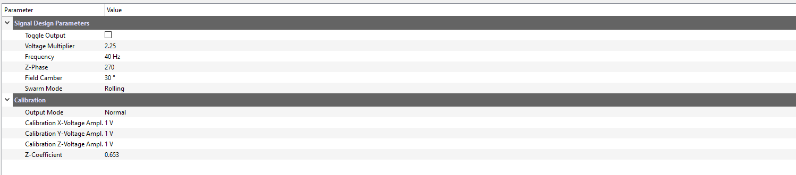

User Interface¶
In this chapter, the details of each element of the user interface are explained.
Live Signal Plot¶
The last 100 data points from the data aquisition card will appear here. Use this window to check the expected output of coils. The y-axis will adjust to account for increasing amplitude. Also, in order to use the keyboard controls, this plot needs to be clicked at least once before pressing the keys.
Parametrized Output Visualization¶
This contains a full three-dimensional representation of the output signal. The plot is interactive and the view can be changed by clicking, dragging, and scrolling out.
The three signals output to the coils form this representation of the magnetic field in 3D space. This should always show a perfect circle. The microwheel structure follows this path, and thus this circle can be imagined to be like the wheel. The circle is split up into three segments for easier visualization of direction and tilt.
The colors represent the direction of the rotation. The wheel will always start on green (green means go), then go to red, leaving the bottom half of the wheel blue. Using this key, we can conclude that the wheel in the image above is rotating clockwise and to the right and we should expect to see the same under the microscope if the coils are hooked up correctly. See the calibration section to ensure that the actual magnetic field looks like the visualization.
Parameter Tree¶
This section of the interface allows for direct interaction of the signal parameters and a calibration mode. Each parameter can be:
Clicked on to manually type in a value
Adjusted using the up and down arrows on the right side
Reverted to the default value of that session using the orange arrow button on the far right side
In the calibration section, the output mode can be toggled between “Normal” and “Calibration”. See the Calibration section for more detail on this functionality.
Note
The values in this section are temporary - they will reset to their defaults after MuControl is restarted. To change the default values, use the settings window.
Settings¶

This window allows the user to change important settings for the National Instruments (NI) input and output cards. It can be accessed in File -> Settings. The Default Signal Values section also allows for default value changes between restarts in the Parameter Tree. After calibration, the Z-Coefficient should be set here. These values will only be used after the next restart of the application. Below is a description of each setting and what it does.
Read Parameters¶
- DAQ Name
The name of the data aquisition card, assigned by the NI-DAQmx drivers. By default the device name is
Dev1. This name can be found by opening up the NI-MAX software that was installed with the drivers, clicking on devices on the left, and viewing the connected devices. This will be the same as the name used in the previous MATLAB control code.
Warning
If this name is not correct, MuControl cannot “see” the card!
- Read Channel List
A list of the input channels being used on the physical card. To find out what channels your wires are plugged into, google the model name of the card that you have and match the wires to their channel name. By default, this list is configured to read from six channels (for six coils). If your setup only has 5, simply delete the one that is not being used. These channels will be the same that were in the previous MATLAB control code.
Warning
Be sure to keep the formatting, with square brackets around the list and small quotes around each channel:
['ai0','ai1','ai2','ai3','ai4']
- DAQ Read Rate
The rate at which the data aquisition card collects samples in Hz (or samples per second). This value should be okay at its default, as it provides a good balance between application performance and signal resolution.
- Read Chunk Size
The number of points that are retrieved from the data buffer and plotted. This value should also be okay at its default.
Write Parameters¶
- Function Gen. Name
The name of the function generator name, assigned by the NI-DAQmx drivers. By default the device name is
cDAQ1Mod1. The first part of the name “cDAQ1” refers to the chassis, while the “Mod1” refers to the module housed within. This name can be found in the same manner as the DAQ Name.
Warning
If this name is not correct, MuControl cannot “see” the card!
- Write Channel List
A list of the output channels being used. The numbers of the channels are printed on the physical device where the wires are inserted. By default:
[0, 1, 2]correspond to coils [x, y, z]. Be sure to keep the same formatting if any numbers are changed!- Generation Rate
The rate at which the function generator generates voltage values in Hz (or samples per second). The default, 8000, is very likely sufficient for signal frequencies 10-150 Hz from my experiments using an oscilloscope to check the quality of the waveforms. If this value is changed, I recommend changing it by increments of 1000. It is also required that the number is divisible by 10.
Warning
The Generation Rate setting was removed in MuControl v1.1 as it is an advanced setting that shouldn’t need to be changed.
Default Signal Values¶
To adjust the default signal parameters between application restarts, modify these values. For further explanation, see parameters.